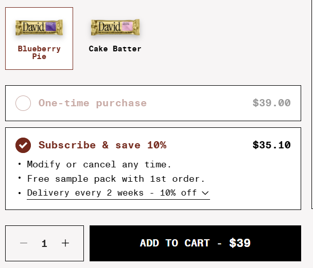
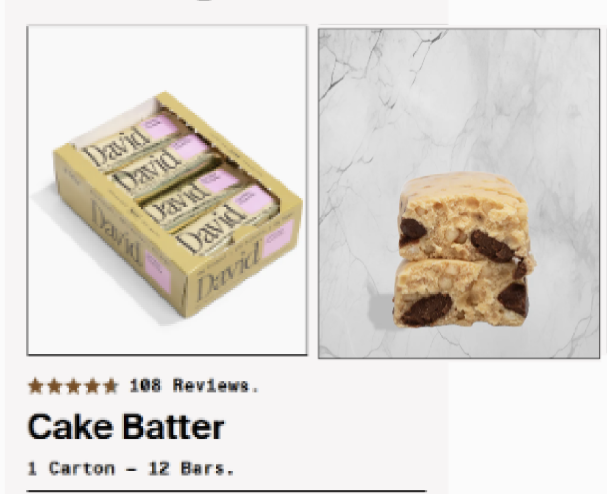
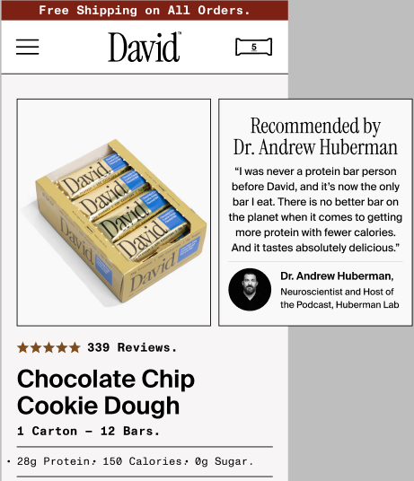
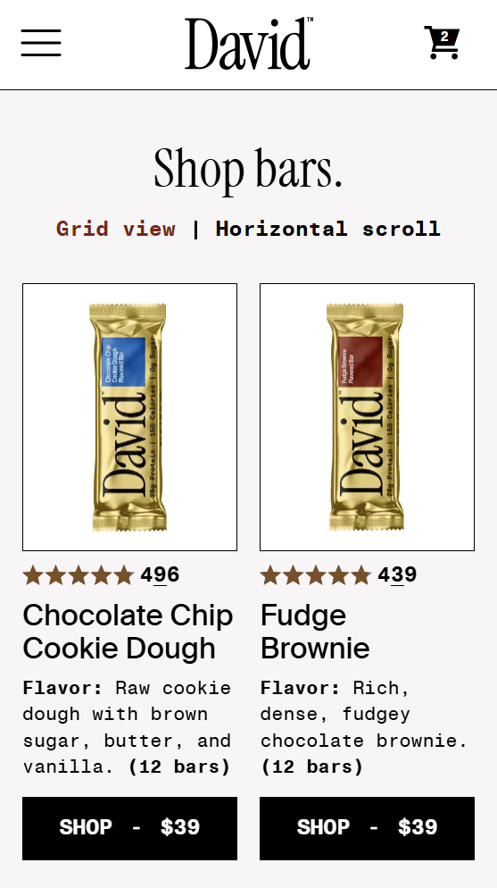
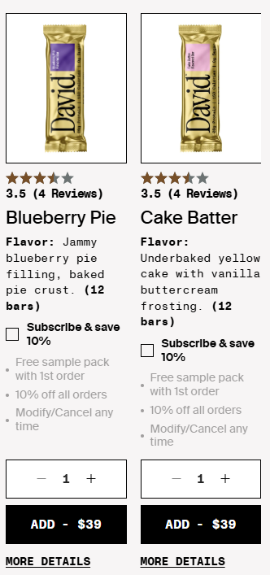
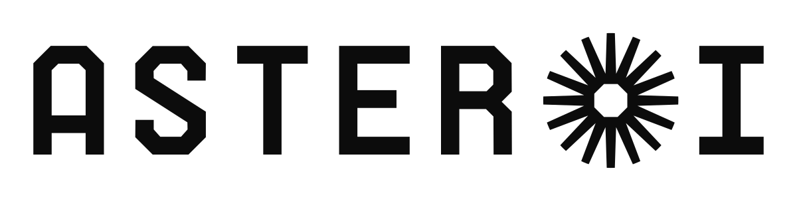

David's PDP converted — but it wasn't building the subscriber base it could. The page defaulted to one-time purchase, carried no authority where the decision starts, and didn't let shoppers subscribe from the collection page at all. Three tests went after the subscription moment.
Preselected the subscription option on the PDP (it had defaulted to one-time), keeping it selected as shoppers switch flavors.

Made the second carousel image on every PDP the Huberman authority quote — moving the social proof that already worked at checkout up to the decision point.


Added a subscribe option directly on the collection (PLP) pages, where a third of add-to-carts happen but subscribing wasn't possible.


